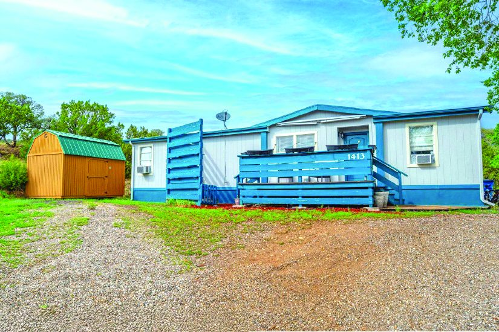
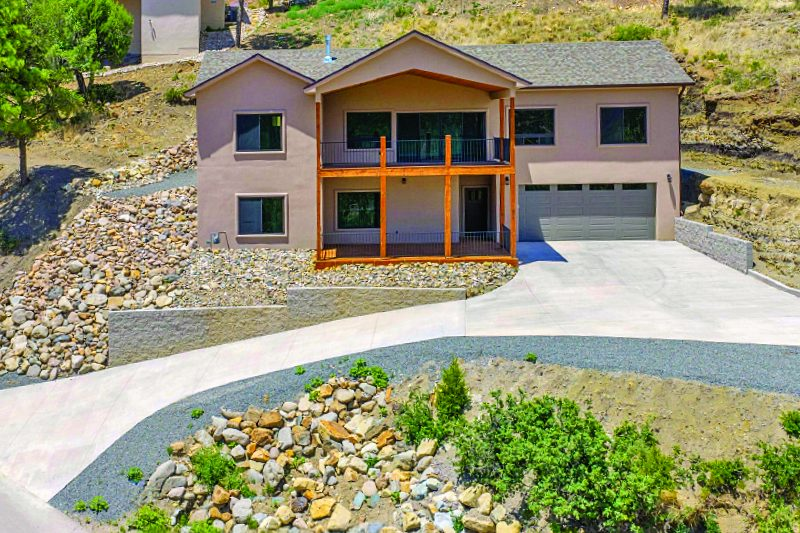
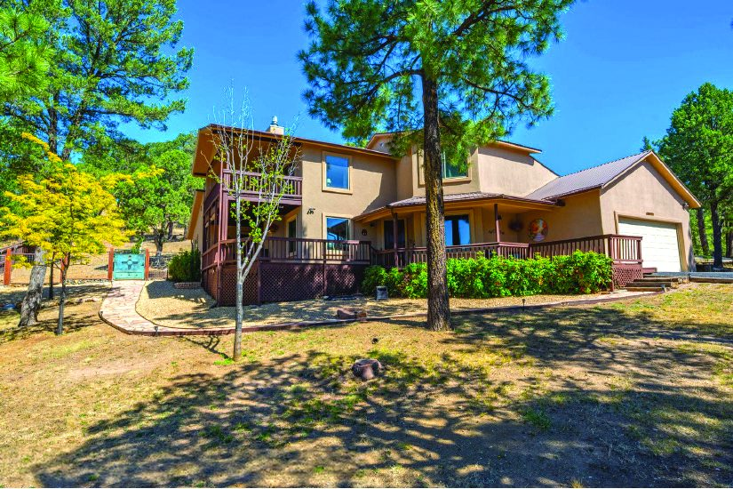
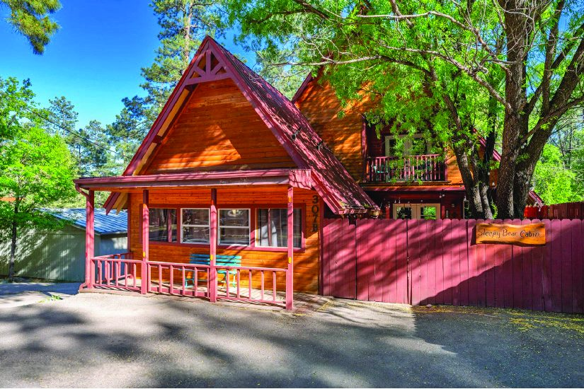
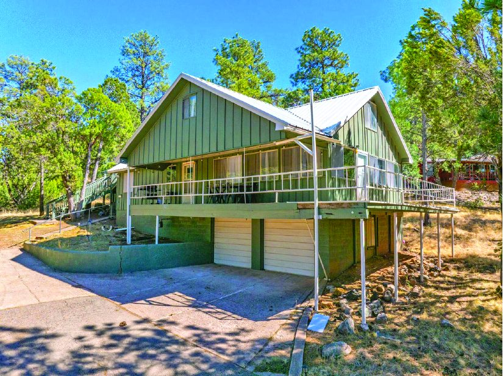

Property in Ruidoso
$265,000
| Price | $265,000 |
|---|---|
| Area | Ruidoso, New Mexico |
| MLS # | 132881 |
| Print edition | October 2026 Lincoln County Edition, page 23 |
About this property
Southern Exposure And Soft Sierra Blanca Views from the front deck, perfect for relaxing in the peaceful Rancho Ruidoso Valley Estates. Inside, you’ll find comfortable and stylish updates throughout. Step outside to enjoy a tranquil koi pond. The fully fenced yard, cement patio, and mountain setting create an ideal space for outdoor living. Additional features include mini-split A/C for year-round comfort. MLS# 132881. $265,000 .
Interested in this property?
Contact the listing company shown in the print edition about this property.
Please contact the listing agent or company directly. The Real Estate Roundup is a publisher and does not show or sell properties.
Listing details and photo reproduced from the October 2026 print edition of The Real Estate Roundup (page 23), as printed. Prices and availability can change after publication — confirm with the listing agent.
More Homes

$779,000 519 Mountain High Circle 4 bd · 4 ba Ruidoso, New Mexico MLS #133784
$598,000 309 LL Davis Drive 4 bd · 3 ba Ruidoso, New Mexico MLS #134003
$398,500 307 B Main Road 3 bd · 3 ba Ruidoso, New Mexico MLS #134107
$365,000 88 Swallow Drive 5 bd · 2 ba Ruidoso, New Mexico MLS #133846